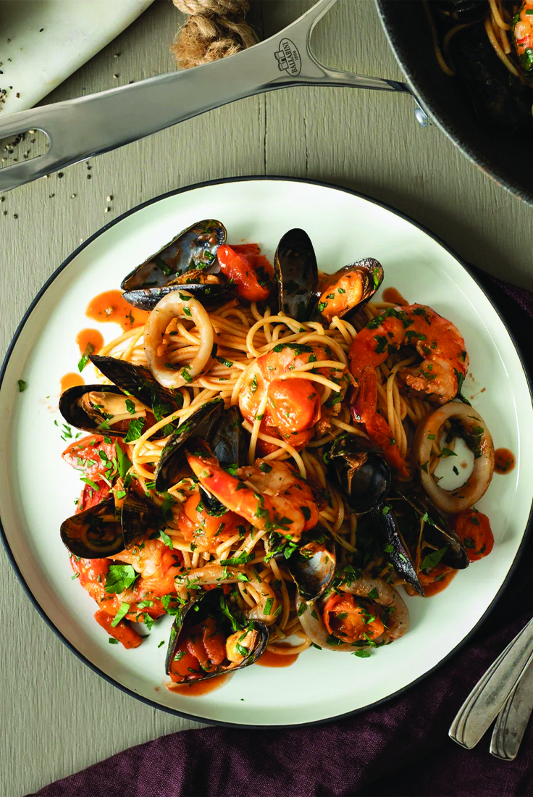

Fresh sea dish: ″Spaghetti allo Scoglio″ it′s a classic dish from italian cousine.
It′s made up of spaghetti with fresh seafood such as mussels of all kinds, scampi, squid and more.
Perfect dish
to present if you wanna impress!
Ingredients
400g spaghetti
500g mussels (in their shells)
300g clams (in their shells)
350g squid
6 shrimp/prawns of your preference
50g parsley
3 cloves of garlic
12 cherry tomatoes
1 red chilli or a generous pinch of dried red chilli flakes
1 lemon or 1 lime
4 tbsp of olive oil
200ml of white wine any but sweet
250ml tomato pure or you can make with fresh chopped tomatoes
50g butter - can be salted or not
salt, pepper for taste
Steps
Soak the clams in lightly salted, lukewarm water for 30 minutes, then drain and rinse, straining off any
sand and grit
that′s leached from the clams
Rinse and scrub the mussels, pulling away the hairy beards
Clean and trim the squid, then cut it into rings
Peel the prawns, removing the head and the black vein that runs along the middle of each prawn′s
back
Halve the cherry tomatoes
Finely chop the parsley
Peel and finely slice the garlic cloves
If you′re using a fresh chilli, take the seeds and dice it
Measure out a medium glass of wine, around 175ml. Have some for you as well!
Put a large pan of water on to boil for your pasta
Warm the olive oil and garlic in a large frying pan over a low heat, cooking gently so as not to burn
the garlic. Once fragrant, add the chilli and cook for a minute more
Add the wine, turn the heat up to medium and add all of the seafood, letting everything cook away
happily for a couple
of minutes
Add the tomatoes and continue to cook, stirring regularly, until the clam and mussel shells open. Remove
and discard any shells that didn′t open
While the seafood sauce bubbles away, salt your pasta water and, once it comes back to the boil, add
your pasta. If
using fresh, cook for 3-4 minutes, for dried, aim for 2 minutes less than the packet instructions
Once the pasta is cooked, drain, reserving some pasta water. Add the spaghetti to the pan of seafood
sauce, along with
the parsley and a ladle of pasta cooking water, then cook for a final minute, swishing and swirling
everything together
Check the seasoning, then divide between bowls and enjoy. Buon appetito!